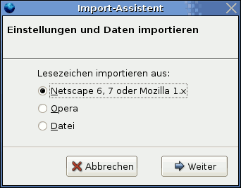

Datenmigration
Diese Anleitung zeigt, wie man Daten im Browser Firefox importieren und exportieren kann. Hauptaugenmerk liegt dabei auf dem Import des Firefox-Profils von Windows.
Windows-Profil importieren¶
Diese Anleitung beschreibt, wie man seine Firefox-Daten von Windows importiert, so dass man diese unter Ubuntu weiter nutzen kann.
Achtung!
Im folgenden wird das alte Firefox-Profil von Ubuntu komplett ersetzt (nicht überschrieben). Man sollte sich darüber im klaren sein, dass man seine alten Daten (Lesezeichen, Cookies, Passwörter) dadurch nicht mehr nutzen kann.
Die Windows-Partition, auf der die Daten liegen, muss in Ubuntu gemäß dieser Anleitung eingebunden werden, falls noch nicht geschehen. An dieser Stelle wird von einer Einbindung unter /media/windows_c ausgegangen.
Während der folgenden Schritte sollten aber alle Firefox-Fenster geschlossen sein.
Die Konfigurationsdateien befinden sich unter Linux als versteckte Verzeichnisse im persönlichen Verzeichnis. Diese muss man erst je nach verwendetem Dateimanager anzeigen lassen. Normalerweise funktioniert dies über "Ansicht -> Verborgene Dateien anzeigen" bzw. Strg + H .
Jetzt kopiert man nur den Inhalt des Verzeichnis /media/windows_c/Dokumente und Einstellungen/BENUTZERNAME/Anwendungsdaten/Mozilla/Firefox/Profiles nach /home/BENUTZERNAME/.mozilla/firefox. Falls das gewünschte profil hier nicht vorhanden ist, sieht man am Besten unter http://support.mozilla.com/en-US/kb/Profiles#How_to_find_your_profile nach. Diese Seite sollte unter windows aufgerufen werden, da sie betriebssystemspezifisch angezeigt wird. (Falls ihr die Seite unter ubuntu aufruft, wird somit angezeigt wo man das profil unter ubuntu findet.) Dabei wird nur die Datei profiles.ini überschrieben, in der steht, welches Profil (xxx.default) genutzt wird. Siehe hiezu auch Firefox/Profile. Es sollte auf jeden Fall überprüft werden, ob in profiles.ini das richtige profil benutzt wird.
Achtung!
Man sollte unbedingt nach dem Kopieren überprüfen, ob man genug Schreibrechte auf alle kopierten Dateien hat. Falls nicht, muss man dies ändern, sonst startet Firefox nicht oder nicht korrekt.
Beim nächsten Start von Firefox sollte dann das alte Windows-Profil gestartet und benutzt werden.
Hinweis:
Sollte man unter Windows spezielle Firefox-Erweiterungen installiert haben, werden diese nach dem ersten Start überprüft, ob sie mit der aktuellen Firefox-Version kompatibel sind.
Profil übergreifend nutzen¶
Man kann Firefox aber auch so einstellen, dass es die Daten von Windows nutzt, ohne den Ort zu verändern. Dies ist sinnvoll, wenn man die gleichen Daten unter Windows und Ubuntu und auch aktualisieren will.
Lesezeichen importieren/exportieren¶
Möchte man Lesezeichen importieren oder exportieren, ruft man zuerst den Lesezeichenmanager unter "Lesezeichen -> Lesezeichen-Manager" auf.
Importieren¶
Mittels "Datei -> Importieren..." kann man Lesezeichen importieren. Man hat hier die Auswahl zwischen den Lesezeichen von Mozilla/Netscape, Opera oder auch Lesezeichen, die in einer extra Datei gespeichert wurden, die man z.B. vorher exportiert hat (siehe unten).

Exportieren¶
Mittels "Datei -> Exportieren..." kann man Lesezeichen exportieren. Diese werde normalerweise als Datei bookmarks.html gespeichert.
 Übersichtsartikel
Übersichtsartikel- Erstellt mit Inyoka
-
 2004 – 2017 ubuntuusers.de • Einige Rechte vorbehalten
2004 – 2017 ubuntuusers.de • Einige Rechte vorbehalten
Lizenz • Kontakt • Datenschutz • Impressum • Serverstatus -
Serverhousing gespendet von